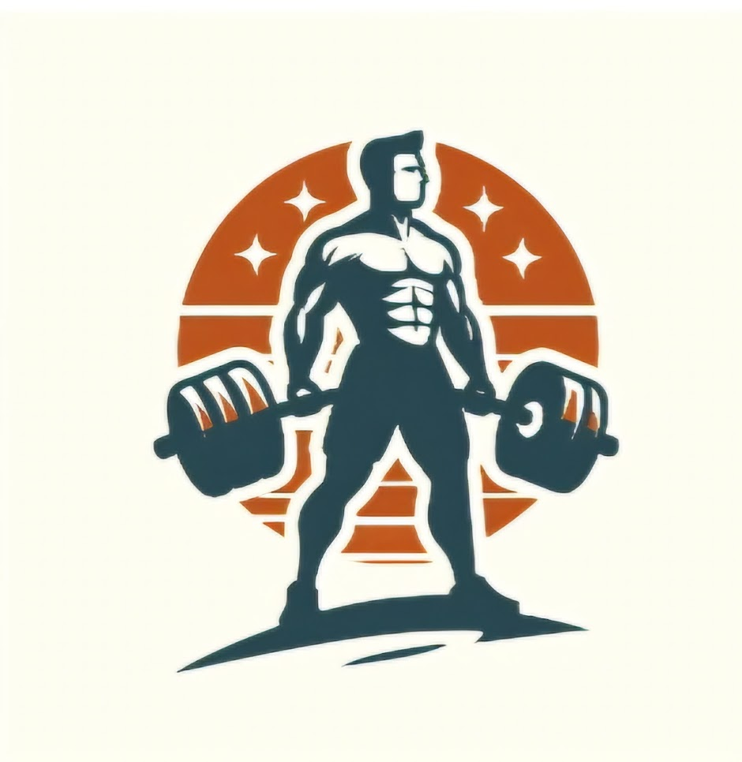

Iron Standard
About
An iron standard is a fitness and health management system for organizing your health and fitness information in one place.What do we make
Iron standard is a service which enables individuals to lead, learn and monetize their healthy life habits. Iron standard creates networking solutions for experts and enables them to connect more easily with their clients. It enables professionals and recreatives frictionless and supporting environment for their health and fitness goals.What sets as apart from other
- Gym checkin. A check in by QR codes
- Exercise tracking. Journaling and profile management
- User profile. Profile where user can see his progress
- Fitness trainer market. Market for fitness trainers and well-being professionals
- Game economy. Incentivized games and challenges in a decentralized and centralized mode
- Easier connection. Connect and share your profiles
- Education. Education material
- Gym Scheduler. A scheduling system for scheduling users to fitness centers in some area
- Training map. Map for training spots and
- Planning incentivization features. Incentivize planning
People
Dominik Stipić, Founder

XXX, Co-Founder